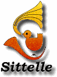
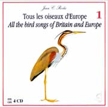

Nederlandstalige hoesjes Sitelle
donderdag 12 januari 2006
Wie de uitstekende cd-sets met vogelgeluiden van Jean C. Roché in zijn bezit heeft kan hier gratis Nederlandstalige hoesjes downloaden. Ze zijn voorzien van alle soortnamen in het Nederlands en de wetenschappelijke benamingen. Opzoekingswerk wordt op deze manier een stuk sneller en eenvoudiger!

Om de bestanden met de hoesjes te kunnen lezen heb je Adobe Acrobat Reader of hoger nodig. Let er bij het afdrukken op dat alle crop- en andere reductieinstellingen AF staan (ze staan automatisch aan!) Kijk daarvoor naar uw afdrukinstellingen in Adobe Acrobat Reader voor u gaat drukken! Als u ergens een foutje opmerkt in de hoesjes, stuur me dan gerust een mailtje.
 |
Tous les oiseaux d’Europe – 1990 (4CD)
Jean C. Roché
|
 |
Le Coffret Ornitho – 2001 (10CD)
Jean C. Roché & Jérôme Chevereau
|